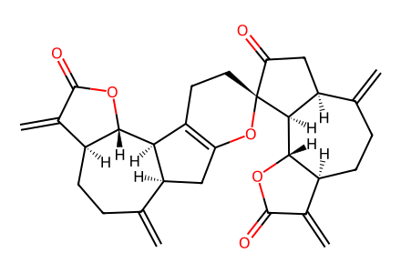
C=C1C(=O)O[C@@H]2[C@H]3C4=C(C[C@H]3C(=C)CC[C@@H]12)O[C@]1(CC4)C(=O)C[C@H]2C(=C)CC[C@H]3C(=C)C(=O)O[C@@H]3[C@H]21Main-text Scheme2 productive oxidation cascade and isolated diversification products. SI not available; historical precursor preparation is a cited boundary. Perspective-only center in9 and wavy hydroxyl center in10 qualified. Facts compiled deterministically; independent review pending.
完整 JSON · 逐步 CSV · 路线序列 · SDF · HRMS 核对
| 事件 | 分子连接 | 报告产率 | Canonical reaction SMILES |
|---|---|---|---|
| P01 | 2 → 3 | 3: 60% | C=C1C(=O)C[C@H]2C(=C)CC[C@H]3C(=C)C(=O)O[C@@H]3[C@@H]12>>C=C1C(=O)O[C@@H]2[C@H]3C4=C(C[C@H]3C(=C)CC[C@@H]12)O[C@]1(CC4)C(=O)C[C@H]2C(=C)CC[C@H]3C(=C)C(=O)O[C@@H]3[C@H]21 |
| O01 | 3 → 7 + 8 | 7: 58%; 8: 25% | C=C1C(=O)O[C@@H]2[C@H]3C4=C(C[C@H]3C(=C)CC[C@@H]12)O[C@]1(CC4)C(=O)C[C@H]2C(=C)CC[C@H]3C(=C)C(=O)O[C@@H]3[C@H]21>>C=C1C(=O)O[C@@H]2[C@@H]3[C@@H](CC(=O)[C@]34CC[C@]35O[C@]3(C[C@H]3C(=C)CC[C@H]6C(=C)C(=O)O[C@@H]6[C@H]35)O4)C(=C)CC[C@@H]12.C=C1CC[C@H]2C(=C)C(=O)O[C@@H]2[C@@H]2[C@H]1C=C1O[C@]34C[C@H]5C(=C)CC[C@H]6C(=C)C(=O)O[C@@H]6[C@H]5[C@]3(O)CC[C@@]12O4 |
| O02 | 3 → 8 | 8: 99% | C=C1C(=O)O[C@@H]2[C@H]3C4=C(C[C@H]3C(=C)CC[C@@H]12)O[C@]1(CC4)C(=O)C[C@H]2C(=C)CC[C@H]3C(=C)C(=O)O[C@@H]3[C@H]21>>C=C1CC[C@H]2C(=C)C(=O)O[C@@H]2[C@@H]2[C@H]1C=C1O[C@]34C[C@H]5C(=C)CC[C@H]6C(=C)C(=O)O[C@@H]6[C@H]5[C@]3(O)CC[C@@]12O4 |
| O03 | 7 → 9 | 9: 44% | C=C1C(=O)O[C@@H]2[C@@H]3[C@@H](CC(=O)[C@]34CC[C@]35O[C@]3(C[C@H]3C(=C)CC[C@H]6C(=C)C(=O)O[C@@H]6[C@H]35)O4)C(=C)CC[C@@H]12>>C=C1C(=O)O[C@@H]2[C@@H]3[C@@H](CC4(O)O[C@]56C[C@H]7C(=C)CC[C@H]8C(=C)C(=O)O[C@@H]8[C@H]7[C@]5(O)CC[C@]34O6)C(=C)CC[C@@H]12 |
| O04 | 3 → 10a + 10b | not reported | C=C1C(=O)O[C@@H]2[C@H]3C4=C(C[C@H]3C(=C)CC[C@@H]12)O[C@]1(CC4)C(=O)C[C@H]2C(=C)CC[C@H]3C(=C)C(=O)O[C@@H]3[C@H]21>>C=C1CC[C@H]2C(=C)C(=O)O[C@@H]2[C@@H]2[C@H]1C(O)[C@@]13O[C@@]45C[C@H]6C(=C)CC[C@H]7C(=C)C(=O)O[C@@H]7[C@H]6[C@]4(CC[C@]21O5)O3.C=C1CC[C@H]2C(=C)C(=O)O[C@@H]2[C@@H]2[C@H]1C(O)[C@@]13O[C@@]45C[C@H]6C(=C)CC[C@H]7C(=C)C(=O)O[C@@H]7[C@H]6[C@]4(CC[C@]21O5)O3 |
| T01 | 3 → 11 | not reported | C=C1C(=O)O[C@@H]2[C@H]3C4=C(C[C@H]3C(=C)CC[C@@H]12)O[C@]1(CC4)C(=O)C[C@H]2C(=C)CC[C@H]3C(=C)C(=O)O[C@@H]3[C@H]21>>C=C1C(=O)O[C@@H]2[C@@H]3[C@@H](C[C@@]45OO[C@@]34CC[C@@]3(O5)C(=O)C[C@H]4C(=C)CC[C@H]5C(=C)C(=O)O[C@@H]5[C@H]43)C(=C)CC[C@@H]12 |
| T02 | 11 → 12 | Scheme 2 reports 89%; adjacent prose says quantitatively. Source disagreement unresolved. | C=C1C(=O)O[C@@H]2[C@@H]3[C@@H](C[C@@]45OO[C@@]34CC[C@@]3(O5)C(=O)C[C@H]4C(=C)CC[C@H]5C(=C)C(=O)O[C@@H]5[C@H]43)C(=C)CC[C@@H]12>>C=C1CC[C@H]2C(=C)C(=O)O[C@@H]2[C@@H]2[C@H]1C=C1O[C@]34C[C@H]5C(=C)CC[C@H]6C(=C)C(=O)O[C@@H]6[C@H]5[C@]3(OO)CC[C@@]12O4 |
| T03 | 12 → 13 | not reported | C=C1CC[C@H]2C(=C)C(=O)O[C@@H]2[C@@H]2[C@H]1C=C1O[C@]34C[C@H]5C(=C)CC[C@H]6C(=C)C(=O)O[C@@H]6[C@H]5[C@]3(OO)CC[C@@]12O4>>C=C1CC[C@H]2C(=C)C(=O)O[C@@H]2[C@@H]2[C@H]1C=C(O)[C@]21CCC(=O)[C@@H]2[C@H]3OC(=O)C(=C)[C@@H]3CCC(=C)[C@@H]2CC(=O)O1 |
| T04 | 13 → 14 | not reported | C=C1CC[C@H]2C(=C)C(=O)O[C@@H]2[C@@H]2[C@H]1C=C(O)[C@]21CCC(=O)[C@@H]2[C@H]3OC(=O)C(=C)[C@@H]3CCC(=C)[C@@H]2CC(=O)O1>>C=C1CC[C@H]2C(=C)C(=O)O[C@@H]2[C@@H]2[C@H]1C=C1OC(=O)C[C@H]3C(=C)CC[C@H]4C(=C)C(=O)O[C@@H]4[C@H]3C(=O)CC[C@@]12O |
| T05 | 13 → 5 | 5: 72% | C=C1CC[C@H]2C(=C)C(=O)O[C@@H]2[C@@H]2[C@H]1C=C(O)[C@]21CCC(=O)[C@@H]2[C@H]3OC(=O)C(=C)[C@@H]3CCC(=C)[C@@H]2CC(=O)O1>>C=C1C(=O)O[C@@H]2[C@@H]3[C@@H](CC(=O)O[C@@]34CC[C@@]3(O4)C(=O)C[C@H]4C(=C)CC[C@H]5C(=C)C(=O)O[C@@H]5[C@H]43)C(=C)CC[C@@H]12 |
| T06 | 11 → 5 | 5: 64% | C=C1C(=O)O[C@@H]2[C@@H]3[C@@H](C[C@@]45OO[C@@]34CC[C@@]3(O5)C(=O)C[C@H]4C(=C)CC[C@H]5C(=C)C(=O)O[C@@H]5[C@H]43)C(=C)CC[C@@H]12>>C=C1C(=O)O[C@@H]2[C@@H]3[C@@H](CC(=O)O[C@@]34CC[C@@]3(O4)C(=O)C[C@H]4C(=C)CC[C@H]5C(=C)C(=O)O[C@@H]5[C@H]43)C(=C)CC[C@@H]12 |

C=C1C(=O)O[C@@H]2[C@H]3C4=C(C[C@H]3C(=C)CC[C@@H]12)O[C@]1(CC4)C(=O)C[C@H]2C(=C)CC[C@H]3C(=C)C(=O)O[C@@H]3[C@H]21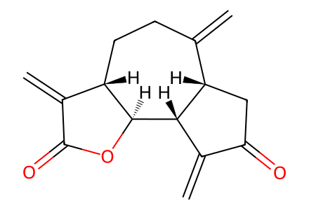
C=C1C(=O)C[C@H]2C(=C)CC[C@H]3C(=C)C(=O)O[C@@H]3[C@@H]12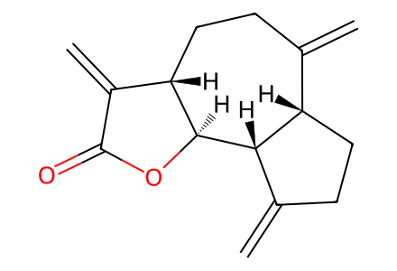
C=C1CC[C@H]2C(=C)CC[C@H]3C(=C)C(=O)O[C@@H]3[C@@H]12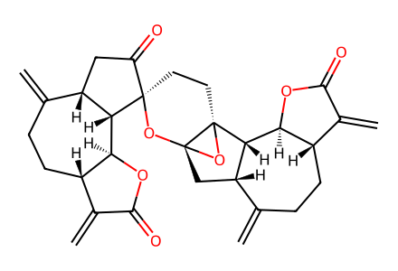
C=C1C(=O)O[C@@H]2[C@@H]3[C@@H](CC(=O)[C@]34CC[C@]35O[C@]3(C[C@H]3C(=C)CC[C@H]6C(=C)C(=O)O[C@@H]6[C@H]35)O4)C(=C)CC[C@@H]12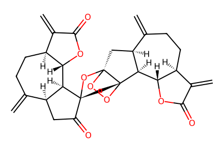
C=C1C(=O)O[C@@H]2[C@@H]3[C@@H](C[C@@]45OO[C@@]34CC[C@@]3(O5)C(=O)C[C@H]4C(=C)CC[C@H]5C(=C)C(=O)O[C@@H]5[C@H]43)C(=C)CC[C@@H]12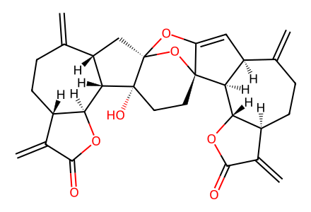
C=C1CC[C@H]2C(=C)C(=O)O[C@@H]2[C@@H]2[C@H]1C=C1O[C@]34C[C@H]5C(=C)CC[C@H]6C(=C)C(=O)O[C@@H]6[C@H]5[C@]3(O)CC[C@@]12O4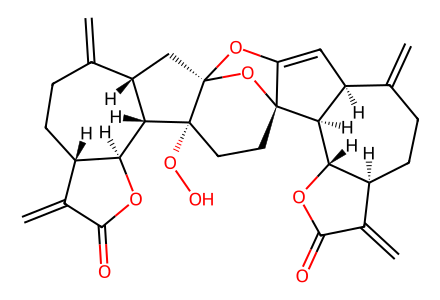
C=C1CC[C@H]2C(=C)C(=O)O[C@@H]2[C@@H]2[C@H]1C=C1O[C@]34C[C@H]5C(=C)CC[C@H]6C(=C)C(=O)O[C@@H]6[C@H]5[C@]3(OO)CC[C@@]12O4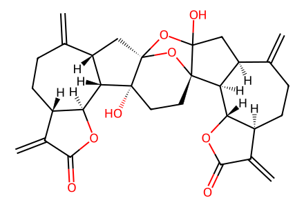
C=C1C(=O)O[C@@H]2[C@@H]3[C@@H](CC4(O)O[C@]56C[C@H]7C(=C)CC[C@H]8C(=C)C(=O)O[C@@H]8[C@H]7[C@]5(O)CC[C@]34O6)C(=C)CC[C@@H]12
C=C1CC[C@H]2C(=C)C(=O)O[C@@H]2[C@@H]2[C@H]1C(O)[C@@]13O[C@@]45C[C@H]6C(=C)CC[C@H]7C(=C)C(=O)O[C@@H]7[C@H]6[C@]4(CC[C@]21O5)O3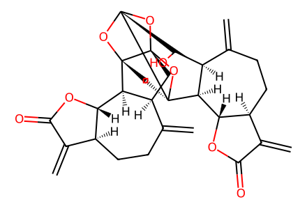
C=C1CC[C@H]2C(=C)C(=O)O[C@@H]2[C@@H]2[C@H]1C(O)[C@@]13O[C@@]45C[C@H]6C(=C)CC[C@H]7C(=C)C(=O)O[C@@H]7[C@H]6[C@]4(CC[C@]21O5)O3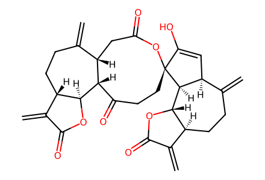
C=C1CC[C@H]2C(=C)C(=O)O[C@@H]2[C@@H]2[C@H]1C=C(O)[C@]21CCC(=O)[C@@H]2[C@H]3OC(=O)C(=C)[C@@H]3CCC(=C)[C@@H]2CC(=O)O1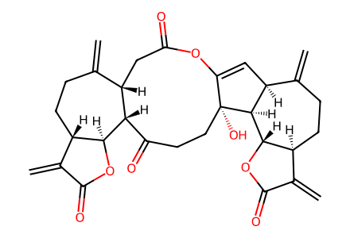
C=C1CC[C@H]2C(=C)C(=O)O[C@@H]2[C@@H]2[C@H]1C=C1OC(=O)C[C@H]3C(=C)CC[C@H]4C(=C)C(=O)O[C@@H]4[C@H]3C(=O)CC[C@@]12O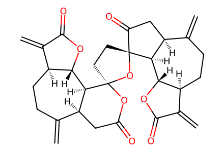
C=C1C(=O)O[C@@H]2[C@@H]3[C@@H](CC(=O)O[C@@]34CC[C@@]3(O4)C(=O)C[C@H]4C(=C)CC[C@H]5C(=C)C(=O)O[C@@H]5[C@H]43)C(=C)CC[C@@H]12T02: Empty agents do not imply absent conditions. Preserve rt/overnight and conflicting yield descriptions; do not transfer upstream O2/TPP conditions.